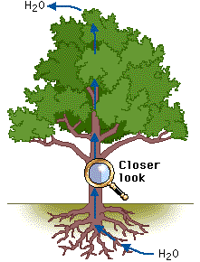

Before you can understand the way water moves through a plant, it's important to understand how water molecules interact with each other. Take a side trip if you want to review hydrogen bonding.
Movement of Water in a Plant
Water enters a plant through the root hairs, passes through the tissues of the root into the xylem, and travels up through the xylem vessels into the leaves. Transpiration, the evaporation of water from the leaves, is the major factor that pulls the water up through the plant. Look at how water moves upward within xylem vessels by selecting the magnifying glass on the tree.
